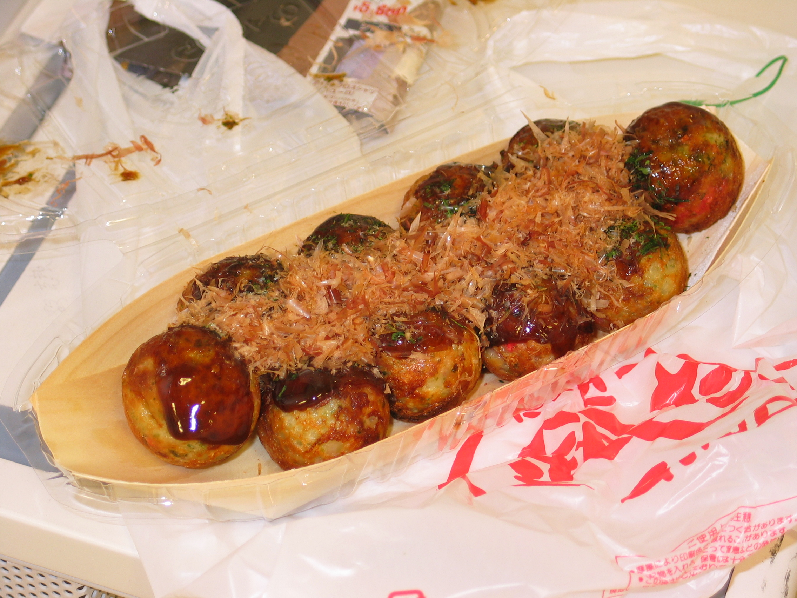

Takoyaki

Takoyaki Ingredients
Batter:
- 2 cups takoyaki flour
- 4 cups dashi stock
- 2 eggs
- 1 cup finely chopped octopus (cooked)
- 1/2 cup chopped scallions
- 1/4 cup pickled red ginger
- 1/4 cup tenkasu (tempura scraps)
- Soy sauce to taste
- Salt and pepper to taste
Toppings and Garnishes:
- Takoyaki sauce
- Japanese mayonnaise
- Bonito flakes
- Aonori (dried seaweed flakes)
Tools:
- Takoyaki pan
- Takoyaki pick or skewer
- Basting brush
Instructions:
- In a bowl, mix takoyaki flour, dashi stock, eggs, chopped octopus, scallions, pickled red ginger, tenkasu, soy sauce, salt, and pepper to create the batter.
- Preheat the takoyaki pan and grease each mold with oil.
- Pour the batter into the molds, filling them almost to the top.
- Add takoyaki toppings into each mold.
- As the batter starts to cook, use the takoyaki pick to rotate each ball, forming a round shape.
- Continue rotating until the takoyaki balls are golden brown and crispy on the outside.
- Remove from the pan and drizzle with takoyaki sauce and Japanese mayonnaise.
- Sprinkle bonito flakes and aonori on top.
- Serve hot and enjoy!